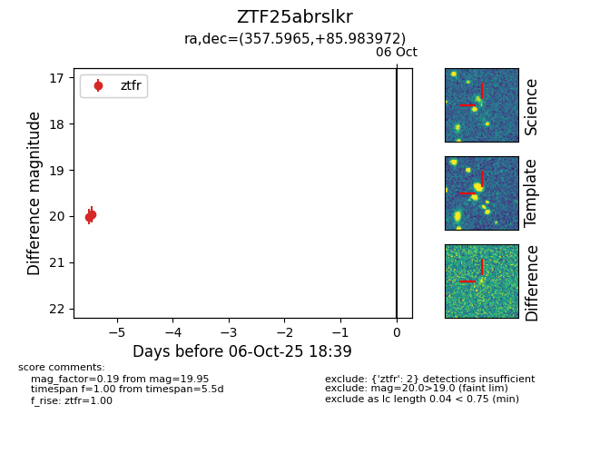

FINK: ZTF25abrslkr
Lasair: ZTF25abrslkr
ALeRCE: ZTF25abrslkr
ZTF25abrslkr (ztf,fink)
equatorial (ra, dec) = (357.5965,+85.98397)
galactic (l, b) = (121.7821,+23.24925)

last ztfr=19.95
2 ztfr detections